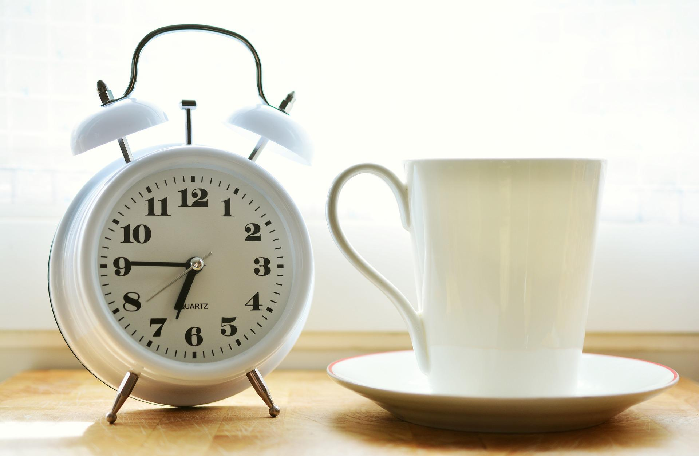

毎日、同じ時間に起きる
起床時間と健康を考える上で, 最も大切なのは「何時に起きるのか？」 という起床時間ではない. 毎日, 同じ時間に起きることが健康のためには極めて重要である. 寝る時間や起床時間が 普段より2時間以上前後すると「体内時計」がズレる. 体内時計とは, ホルモン, 脳内物質, 内臓の活動などが基準とする時計である. 例えば, 昼夜逆転した生活で体内時計がズレると, 昼に出るホルモンが夜に出て, 夜に出るホルモンが昼に出る. それが体調不良, 睡眠不足の原因となり, 健康が損なわれます. 「毎日, ほぼ同じ時間に寝て, 同じ時間に起きる」この原則を守ることで 「体内時計」が整い, 高いパフォーマンスにつながります.
